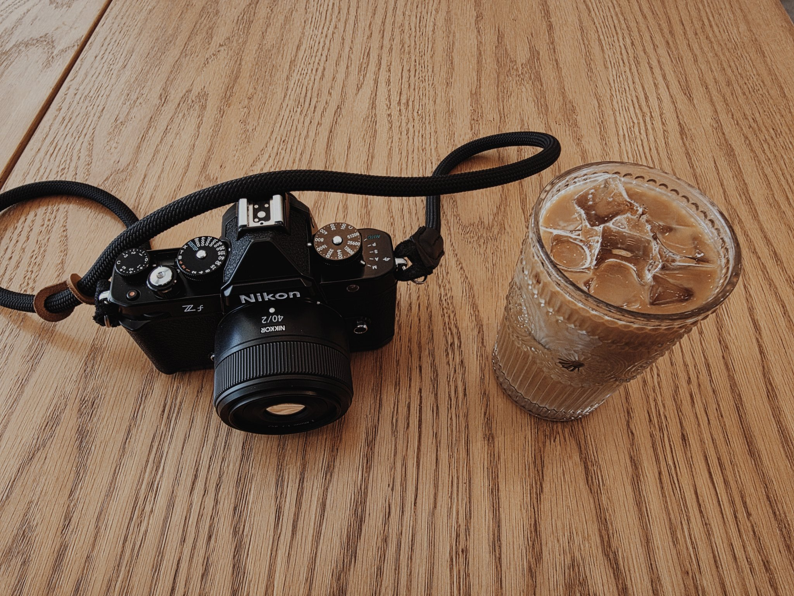

Nikon Zf: First Impressions
This review isn't finished yet. These are all my impressions so far from actually using the camera — I'll keep adding to it as I shoot more.

01Looks
It LOOKS good. It's a really good-looking camera, and that surprised me, since I've always been into rangefinder-style cameras. But I like the presence it has — retro, but sleek and modern somehow. It really does look like a film camera, and I really enjoy carrying it around. And it looks damn good sitting on the coffee table.
02Handling
The grip is uncomfortable — this is definitely a camera you want a grip or a strap for. It's chunky, but not overly heavy. Now that I have a strap, it's a lot more handleable, since the weight shifts to my neck.
The dials feel great. They're very clicky. They might be a little heavy to click, but I think that's a good thing — on other cameras I've had with dials like these, they tend to accidentally move around.
I really enjoy the black and white dial. I find myself shooting black and white more often.
03Shutter
At first, I didn't like the shutter. One of the main reasons I didn't like the S9 was the lack of a mechanical shutter, and with the size and look of this camera, you'd expect a clack — a nice, heavy shutter, since it looks like an old-school Nikon. Instead it's soft and light, not satisfying at all.
But after more time shooting with this camera, the shutter sound started growing on me. It's still not a satisfying mechanical shutter like on a film camera, but it has its own quality to it — and it's nice for more intimate spaces.
04Color & image quality
The more I use it, the more I enjoy the color science. I started messing with photo recipes from serbanjpg.com — I think. I'm really enjoying the colors, and the JPEGs look very nice and clean. Lately I've been shooting the Modern Chrome recipe, just JPEGs. I think a camera should be able to take great images without needing to edit them.
Honestly, as I've used more cameras, I realize color science isn't as big of a thing anymore. You can pretty much edit anything into anything else. But having a system that lets you add recipes or LUTs really makes shooting more fun, because you can just focus on shooting — not so much on the edit. Don't get me wrong, sometimes editing can be fun. But it's also nice to focus purely on the photographing part.
After nearly 10 years shooting with modern cameras, it's almost impossible to get a truly bad image out of one. Nowadays, if you're good at what you do, you can get good images out of anything. That being said — this Nikon shoots great images.
05Out in the world
The camera is not as discreet as other cameras I've used — it grabs attention. That being said, it's still not DSLR-in-someone's-face level. I think that's largely because it looks like a film camera.
06The 40mm f/2
I purchased a 40mm f/2 — it seems to be one of the more budget options. It's plastic, and it's really light, and pancake-style, so it's very sleek. It's definitely not the sharpest lens I've ever used, and its character isn't extremely interesting, but it's sharp enough. I think the 40mm focal length is very natural. I used to be a big 35mm shooter, but I ended up getting bored of that focal length — it's always too wide when you want to be closer, and too tight when you want it to be wider. 40mm is a really nice walking-around lens. It just seems to match what I see with my own eyes, and it tends to lean tighter. Overall the image quality is nice, the bokeh is really enjoyable, and the contrast on the lens is quite nice.
07The Software (and the Recipe Problem)
Real quick, I want to mention the software. This is something that doesn't really come up a lot on cameras, especially when you're mostly a dedicated photographer. Once you get your settings dialed in, it's not something you're moving around too often — at least I'm not.
That being said, the Nikon software is fairly straightforward. Now that I've used all the systems, I think Sony continues to be the most complex one in terms of menus and submenus. Nikon is not much better, but it's not the worst. I would say overall Fujifilm has the best settings layout, in my opinion — but maybe that's just because I used it for so much longer.
One thing I will say is the worst out of any camera brand: the way you connect your camera to your phone is absolutely ridiculous.
Part of the big sell on the Nikon Zf is the ability to use these photo recipes, or film simulations, whatever you want to call them. Lumix has an amazing system where you can just upload LUTs — the same ones you use while you edit photos or videos — and it's absolutely fantastic. You connect your camera to your phone and just upload them. Pretty straightforward. Fujifilm, you do everything in camera: you mess with the settings, you set it to the right specifications, and you go from there. I don't believe Sony or Canon have something similar. When it comes to Nikon, it is the weirdest setup I've seen so far.
Not only do they not have an app you can use to download them to your camera, like Lumix — you can't just dial them in camera either. They have to be uploaded onto a website, which then connects to your camera's cloud. And there's no button or anything to send it directly to your camera. You just have to wait until your camera syncs with the cloud and downloads it. And maybe I'm just not smart enough, but I genuinely cannot see a better way — you literally upload it to the cloud, then turn your camera on, connect to the cloud, and just wait until it decides it's time to download.
It is by far one of the worst ways to get something like this working. I think if they made either a separate app, or integrated it into the one app Nikon does have, and just let you browse recipes or download recipes and manually upload them, that would be a game changer. Whatever this is would make a lot of people shy away from it — especially people who are not used to dealing with tech or troubleshooting. I'm honestly surprised this is Nikon's current offering, and I'm hoping they figure something out. Then again, I don't think this photo recipe feature is compatible with a lot of their stuff.
08Bonus thoughts
The only thing I'm still figuring out is how to properly meter this sensor. Some sensors are really fine with being overexposed — I've mainly seen this with Fujifilm cameras. I just have not dialed in my settings yet.
More to come.